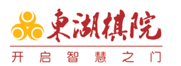

<div class="wrap mt30 pb60 ovh">
  <div class="content lh26">
    <p class="in28"></p>
    <p></p>
    <p>&nbsp;</p>
    <p>&nbsp; &nbsp; &nbsp; &nbsp; 广东东湖棋院是以“三棋”（围棋、象棋和国际象棋）培训、竞赛组织和棋类相关产品开发销售为主的专业棋类教育机构。自2004年创办以来，经过不断努力，东湖棋院已发展成为中国知名的教育品牌，广东规模最大的棋类培训机构，广州少儿素质教育的首选。</p>
    <p>&nbsp; &nbsp; &nbsp; &nbsp;东湖棋院始终坚持“团队、品牌、创新、务实”的经营理念，以“教棋育人”为己任，秉承“通过棋文化的推广普及，提高全民族素质，传承和弘扬中华民族优秀文化”的宗旨，以“帮助孩子们健康快乐成长”为最高诉求，在广大学员、学员家长和社会各界的大力支持下，通过和幼儿园、学校的紧密合作和多年教学研究，根据幼儿、少儿年龄特点和认知规律，以故事、儿歌、卡通形象等为表现形式，形成一套生动、浅显、趣味的教学方法，探索出一条“学习棋中、乐在棋中、成长棋中”的教学模式。</p>
    <p>&nbsp;&nbsp;&nbsp;&nbsp;&nbsp;&nbsp;&nbsp;&nbsp; 目前，东湖棋院已在广州开设15家教学基地，并拥有专业的棋类教育师资队伍，专业三棋教师60余人，其中围棋教师40余人，象棋（中国象棋和国际象棋）教师20余人，围棋和象棋教师团队分别由原广东队围棋队和象棋队专业棋手领衔。常年开设从入门到精英的棋类培训课程，通过不断改进教学设施和设备，加强多媒体教学设备、网上教学论坛、高档棋具等多种教学形式的运用，让棋类教学课堂更加富于现代感和时代活力。</p>
    <p>&nbsp;&nbsp;&nbsp;&nbsp;&nbsp;&nbsp;&nbsp;&nbsp; 东湖棋院拥有丰富的竞赛交流制度，定期举办的定级定段赛、精英赛、亲子赛已成为孩子快乐的源泉和进步的阶梯。其承办和协办的各类成人比赛已成为东湖棋院回报社会和广大棋友的平台。</p>
    <p>&nbsp; &nbsp; &nbsp; &nbsp;</p>
    <p>如需了解更多信息，请访问：http://www.dhqy.com/</p>
    <p></p>
  </div>
</div>
